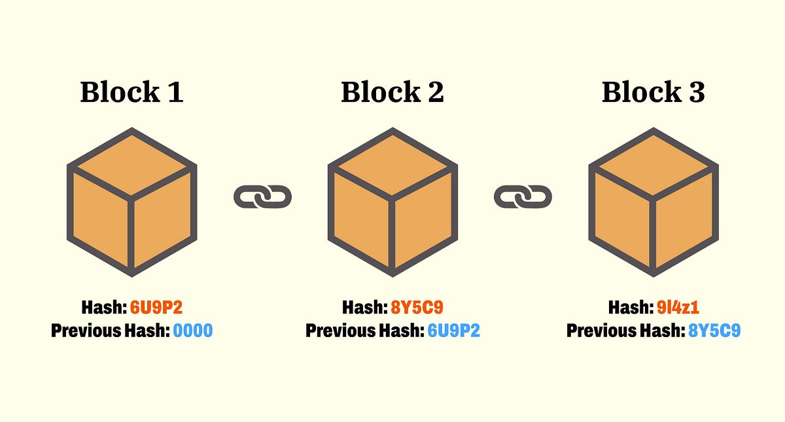

Blockchain
¿Qué es un bloque?
Ahora vamos a comprender lo que es blockchain ya que muchas personas creen que
blockchain y criptomonedas es lo mismo pero, aunque estan muy relacionados entre sí,
no son lo mismo.
Blockchain significa, en español, cadena de bloques. Es literalmente un contenedor (una caja)
que no se puede modificar. Cada una de las cajas agrupa un conjunto de transacciones.
Para visualizarlo de forma sencilla: si la blockchain fuera el libro contable de un banco, un
bloque sería una página individual llena de registros financieros y esas cosas.

¿Qué es un hash?
Aqui nos metemos mas a conceptos de ciberseguridad pero no te asustes. Si deseas,
no hay problema en saltarte este modulo pero te recomiendo que lo leas para entender
mas a profundidad todo. Lo explicare de manera sencilla.
Un hash es un programa matemático que toma cualquier
cosa que le metas (una palabra, bloque, etc) y la transforma en una cadena de letras y
números con un tamaño fijo:
Toma cualquier texto o archivo, sin importar si es una palabra corta como "Hola" o el texto de la Biblia completa.
El texto o archivo pasa por una fórmula matemática
El algoritmo genera un código de longitud fija.
Hay varios algoritmos que son como fórmulas matemáticas para generar un hash.
Algunos de los algoritmos más usados son: SHA-256, Argon2 (muy usado para contraseñas), Bcrypt, etc.
Te pongo un par de ejemplos:
- El hash de la palabra "hola" usando SHA-256:
4d2b260902c3327d223f6686b3e94a8f902636f328ef727376c66cf404ebfa4b
- El hash de la palabra "holA" usando SHA-256:
f6913454b5df56f9e31d4e08f516a2d9c025d0c75c5e88bb0035048b1d9bf597
Propiedades:
Para entender por qué se usa en criptomonedas y tecnología, debes recordar estas propiedas:
- Es de una via (No se puede revertir): Si ves el hash resultante, es matemáticamente imposible
averiguar cuál era el texto original. Solo puedes ir de Texto -> Hash pero nunca
Hash -> Texto
- Es único: Si pones la palabra "hola", siempre te dará el mismo hash exacto
- Es super sensible: Si cambias una sola letra (agregas o borras una letra o número)
o cambias una minúscula por una mayúscula, el hash completo cambia.
Por ejemplo: El hash es completamente diferente si cambias hola por holA
¿Qué contiene cada bloque?
1. El encabezado
- Hash del bloque anterior: Por esta razon se llama "blockchain" o "cadena de bloques"
ya que todos los bloques estan conectados formando una cadena.
- Merkle Root (raíz de Merkle): Es un único código hash que resume todas las
transacciones contenidas en el cuerpo de ese bloque.
- Timestamp: Fecha y hora exacta en la que se minó o generó el bloque.
- Nonce: Un número aleatorio (hay que entender lo que es la minería primero). Más
adelante veremos lo que es la minería.
- Nivel de dificultad: Requerido, a nivel matemático, para validar el bloque.
- Versión: El protocolo de red que sigue.
2. Cuerpo del bloque
- Contador de transacciones: El número total de transacciones que están dentro del bloque.
- Lista de transacciones: El registro detallado de las operaciones procesadas.
Cada una incluye direcciones del remitente/destinatario, la cantidad transferida,
las comisiones, etc.
¿Por qué esta estructura lo hace inalterable?
Si un hacker intenta alterar una sola coma de una transacción pasada:
1. Cambiaría la Raíz de Merkle
2. Eso alteraría por completo el Hash del bloque actual.
3. Al cambiar el Hash actual, el siguiente bloque (que dependía de este hash) perdería
el enlace y la red invalidaría todo el intento de fraude de inmediato.